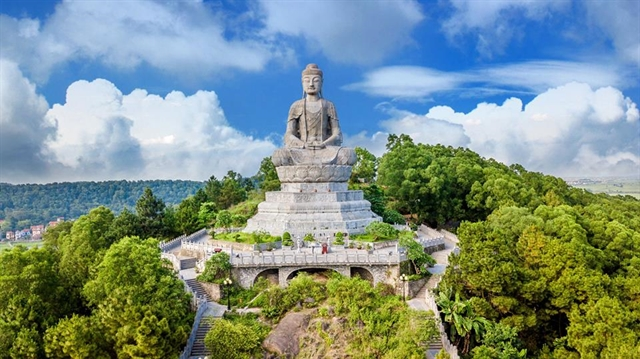

Religion in Vietnam
Buddhism
Buddhism is the most widespread religion and deeply rooted spiritual in Vietnam. Many temples and pagodas reflect its influence on daily life and culture.

Confucianism
Confucianism in Vietnam is a social and political philosophy that shaped Vietnamese ethics, education, governance and family life for nearly two millennia. Confucian values shape Vietnamese education, family structure, and social behavior.
Christianity
Christianity is a minority religion in Vietnam, practiced by roughly 7.6% of the population, with the vast majority being Roman Catholic and a smaller portion identifying as Protestant. Introduced by European missionaries, Christianity has a significant presence, especially in southern Vietnam.